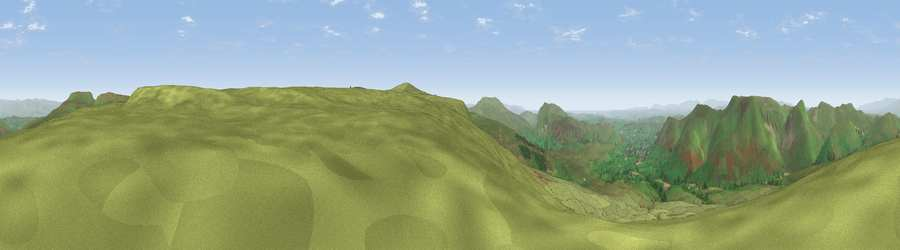

Viewpoint near Garsdale
#4010 in England · top 8% of its area beats it · near GarsdaleThe view, rendered

A 360° render of this exact spot computed from the terrain model, tree cover and land cover — summer colours, afternoon light, calibrated against photographs of famous viewpoints. Real trees, hedges and buildings will differ in detail.
The panorama
Grey silhouette: terrain skyline in each direction (720 bearings, Earth curvature and refraction included). Dashed green: skyline with trees (+15 m) and buildings (+8 m) as obstacles. Blue strip: how far the ground is visible on each bearing.
Where the view opens
Wedge length = distance to the farthest visible ground on that bearing (vegetation-aware). Rings at 10, 25 and 50 km.
What fills the view
97% grassland · 3% woodland
Angular shares of the visible panorama (visual magnitude), not map area. Landscape diversity 0.07 (0–1 Shannon).
Key numbers
More beautiful places nearby
The staircase of upgrades: each row has a higher view potential than everything closer. Driving times are estimates from straight-line distance, calibrated against real road routing — check an actual route before setting out.
| Place | Direction | Drive | Score |
|---|---|---|---|
| Viewpoint near Garsdale | S · 2 km | ~4 min | 73.8 |
| Knoutberry Haw | SSE · 2 km | ~5 min | 74.1 |
| Wild Boar Fell | NNE · 6 km | ~13 min | 75.0 |
| Calders | WNW · 6 km | ~13 min | 79.0 |
| Calf Top | SW · 10 km | ~19 min | 79.8 |
| Crag Hill | SSW · 11 km | ~21 min | 80.0 |
| Warton Crag | SW · 31 km | ~49 min | 83.2 |
| Viewpoint near Finsthwaite | W · 34 km | ~52 min | 84.7 |
54.33744, -2.42330 · source: screening · position refined by local search. Computed location — check access rights before visiting.